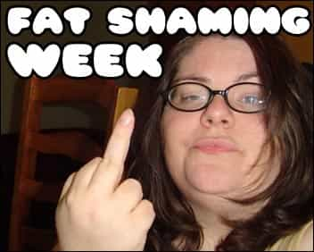
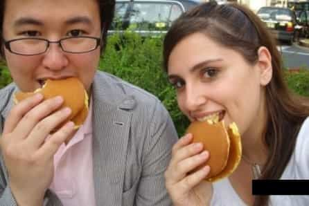
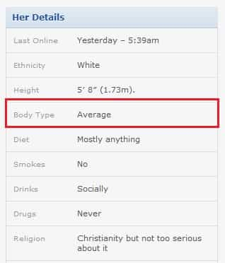

< < < Back
10 Tell-Tale Signs She’s A Secret Internet Fatty – Return Of Kings

Like it or not, online dating is gradually taking over. As the American woman becomes more socially retarded by the minute—liable to blow her rape whistle if a man who isn’t already among her 10,000 Facebook “friends” should so much as say hello to her—it behooves men to adapt to the shifting dating landscape. An online-dating profile has been a part of my repertoire for some time, and it’s supplied me with a healthy dose of fornications, stories to tell, and—above all—wisdom.
I needn’t tell you that online dating is jam packed with a host of nuisances and perils. There’s the over-confident 6 whose ego has been artificially inflated by the fawning online attention of thirsty guys—to the degree that she delusionally carries on like a 9 whenever she cracks open her MacBook. There’s the girl with the manifesto-like profile, itemizing unreasonable demands like a hostage-taker in a movie bank robbery. Then there are the brutally repetitive jokes, clichés, and “witty” remarks that women merely copycat from one another—and television. She’s preparing for the zombie apocalypse. You should message her if you know the difference between to/too/two and there/they’re/their. She took a skydiving picture. She did a novelty race where they spray you with colored powder at the end.
All of those pale in comparison to the mother of all of online-dating dangers: the Notorious S.I.F.–the Secret Internet Fatty. Talk to any man who has shown up to an online date with a cute girl, only to meet 30 pounds more of that girl than he expected, and you’ll know that it’s among the worst sinking feelings you can have on a first date. You’ve been tricked—and on purpose.
Girls today are masters at photographing themselves in the most flattering way possible. And, all you need to do is shadow a few of them for one night to understand how they acquired that skill: girls today spend a better part of their day taking pictures of themselves, and each other. Not only do they have thousands of pictures from which to cherry-pick the best ones, they have countless hours of practice in posing, emphasizing, and concealing. Moreover, girls receive constant input—from other girls as well as their desperate online male admirers—about when they look their best. A college-aged girl has an advanced knowledge of her physique—and photography—far beyond the average guy, even 10 years her elder. The undiscerning male online-dater is simply no match for this training.
So, what can the average man do to avoid being Secret Internet Fattied in today’s online-dating world? Learn to look for the tell-tale signs of the SIF:
1. Has no body shots, only tightly cropped face shots, or very few pictures in the profile.
No matter how much feminists and fatties kick and scream otherwise, girls are hardwired to know that their body is their number-one asset in attracting a mate. If a girl conceals this information from you, you can rest assured there’s a (good) reason. It will never be an accident. An all-headshots profile will mean a dumpy, fat body.
2. Apparent wild swings in body weight in her photographs.
You can be certain that if she has pictures of her as both thin and as fat, she’s currently in the fat stage.
3. Pictured with food or talks about “loving food.”
Fat girls take a lot of pictures of themselves with food because, quite simply, they spend a lot of their time eating, and eating out is the only social activity they know. A girl who talks about how much she loves food–or how much of a “foodie” she is–lives to eat rather than eats to live. That almost always means fat.
4. Has fat friends.
There’s good science that shows that female friend-groups gain weight together. If she associates with fatties—according to her pictures—there’s a good chance she’s fat herself by now.
5. Uses Myspace angles, or similar forms of photographic subterfuge.
Myspace Angles—that is, taking picture from above to reduce her visible size—may be an old trick, but it sticks around because it works.
6. You can’t see her collar bone.
One thing Myspace Angles and similar tricks can’t hide is the absence of a collar bone. If you can’t see it, she’s overweight.

7. Has sausage fingers.
Even if she succeeds in hiding everything else, her hands are a reliable tell-tale physical sign.

8. Overemphasis of one feature, to the exclusion of others.
Since girls are keenly aware of their bodies, they know what looks good and what doesn’t. If they’re only showing you one thing—repeatedly—it’s because there’s something wrong with the rest.
9. Describes herself as “average” or “curvy.”
“Average” and “curvy” have become, almost exclusively, euphemisms for fatness. Even “athletic” isn’t a reliable predictor of a fit physique, since a lot of fat girls will do zumba one day a week, only to drink Starbucks milkshakes on the other six.

10. No new-looking pictures.
One of the most effective tricks is to simply use pictures from when you were skinny. While there’s no reliable way to inoculate yourself against this move, you should look out for signs that her pictures aren’t new. How’s the image quality? What’s happening in the background? What do the captions say?
Avoiding fatties requires a tremendous amount in work in 2013. But, doing that online doesn’t have to be harder than it is in real life. Once you train your eye, you’ll be a master at smoking these SIFs out of their troughs.
Read More: American Girls Have No Game


{kind=link}
{kind=link}
{kind=link}
{kind=link}
{kind=link}
{kind=link}
{kind=link}
{kind=link}